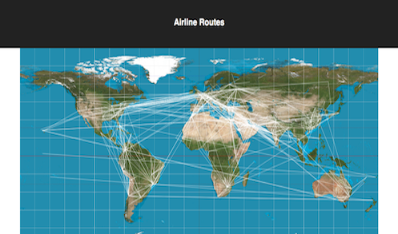

Mat Sachs
I'm a full-stack software engineer in Portland, OR who has built numerous applications with Node, React, Ruby on Rails, Docker, PostgresSQL & more.
I'm also a co-creator of the Mashr framework.

Mashr is an open source data pipeline orchestration and monitoring framework for small applications.
Mashr simplifies the process of taking your data from disparate sources and putting them into a single place so that you can use that data. It is optimized for data pipeline best practices including monitoring for each step of your data pipeline along with archiving and backup in case of failover. Mashr is built with Node.js, provides an easy-to-use CLI, and uses Docker to host Embulk on GCE Instances on Google Cloud Platform (GCP).
READ THE MASHR CASE STUDYOther projects
-
Mello
A Reddit-like application built with Ruby on Rails and PostgreSQL. Allows users to authenticate, create posts, comment on posts, add categories, upvote or downvote posts, and edit profile information.
-

Airline Routes Viewer
A React application that allows users to view airline routes and filter them by airline or airport. Bootstrapped with Create React App.
-

Task Manager Application
A responsive application for task management with Ruby and Sinatra backend and JavaScript(ES6), JQuery, and Handlebars.js frontend. Users perform CRUD operations with tasks.